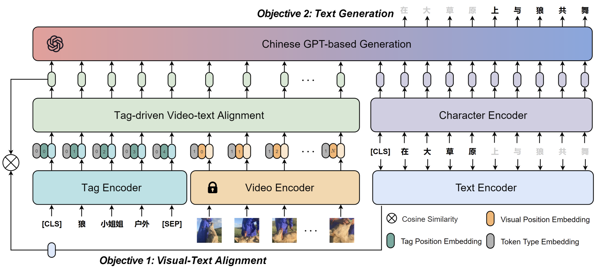

Chinese Short Video Title Generation: New Dataset, Evaluation Metric and Algorithm
Dataset
CREATE is the first large-scale Chinese shoRt vidEo retrievAl and Title gEneration dataset, to assist research and applications in video titling, video captioning, and video retrieval in Chinese. CREATE comprises a high-quality labeled 210K dataset and two web-scale 3M and 10M pre-training datasets, covering 51 categories, 50K+ tags, 537K+ manually annotated titles and captions, and 10M+ short videos with original video information.
Statistics
- High-quality fine-labeled dataset CREATE-210K
- Web-scale weakly-labeled dataset CREATE3M/10M
- 50K+ fine-grained tags
- 537K annotated titles and captions
- 51 categories such as Lifestyle, Pet, Fashion, Gourmet, etc
Annotations
The create-210k-annotation files (create_210k_train.json, create_210k_val.json, create_210k_test.json) consist of a list of high-quality fine-labeled annotations where each item’s structure is as follows:
{ "vid": str, # video id "ann_title": str, # Manually annotated title "ann_caption": str, # Manually annotated caption "raw_title": str, # Original uploaded title "tag": list, # Tag list "category": int, # Video category }The create-3m/10m-annotation files (create_3m_pretrain.json, create_10m_pretrain.json) consist of a list of web-scale weak-labeled annotations where each item’s structure is as follows:
{ "vid": str, # video id "raw_title": str, # Original uploaded title "tag": list, # Tag list }
- The create-210k-feature files and create-3m/10m-feature files contain features extracted by the CLIP model.
Word clouds of different parts-of-speech in the CREATE datasets. The words for the first 250-word frequencies are plotted, with a bigger font size indicating a higher word frequency. The characteristics of two types of annotations (i.e., caption and title) can be intuitively represented through word clouds. (a)∼(c) the statistics of adjectives, nouns, and verbs in the captions of the CREATE dataset. (d)∼(f) the statistics of adjectives, nouns, and verbs in the titles of the CREATE dataset, respectively.

For downloading our dataset, you should use your institutional email address to send an email to Prof. Bing Li and Dr. Ziqi Zhang to state your specific research purpose. When we receive your email, we will provide the download link to you.
Metric
ACTEr is Attractiveness-Consensus-based Title Evaluation metric. It evaluates the relevance and attractiveness of the video titles in a unified framework. The relevance is measured by calculating Chinese-character-wised similarity between contextual embeddings of the candidate and references. The attractiveness is realized by injecting multi-person consensus on the local attractiveness of the reference into Chinese characters’ weights.
Statistics and analyses of attractiveness consensus weighting. (a) attractiveness score curves for various annotation counts. (b) the average error of attractiveness scores for various annotations counts. (c) distribution of the number of attractiveness scores for each character.
 Examples of the overall title scores judged by various metrics. Comparison of the consistency between several major automatic evaluation metrics and human evaluations. The upper portion is rule-based text-matching methods, and the lower portion is semantic-based text-matching methods.
Examples of the overall title scores judged by various metrics. Comparison of the consistency between several major automatic evaluation metrics and human evaluations. The upper portion is rule-based text-matching methods, and the lower portion is semantic-based text-matching methods.
Algorithm

ALWIG is a multi-modal ALignment WIth Generation network. It contains a tag-driven video-text alignment module and a GPT-based generation module to complete the tasks of video titling, captioning, and retrieval simultaneously.
Experimental results of UniVL, OSCAR, and proposed ALWIG. All models are pre-trained on two web-scale weakly-labeled datasets (3M=CREATE3M, 10M=CREATE10M) and fine-labeled on CREATE210K for three tasks: video retrieval, titling, and captioning.
Visualizations of the results of text-video retrieval, video caption, and video title generation. For video titling, we use a green background for expressions related to the content of the video, and a yellow background for attractive expressions.
Contact
-
Ziqi Zhang, Institution of Automation, Chinese Academy of Sciences
-
Bing Li, Institution of Automation, Chinese Academy of Sciences